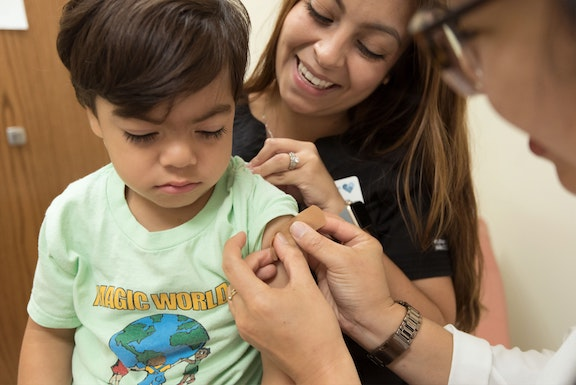

4 Research Ethics
In 1998 a medical journal called The Lancet published an article of interest to many psychologists. The researchers claimed to have shown a statistical relationship between receiving the combined measles, mumps, and rubella (MMR) vaccine and the development of autism—suggesting furthermore that the vaccine might even cause autism. One result of this report was that many parents decided not to have their children vaccinated, which of course put them at higher risk for measles, mumps, and rubella. However, follow-up studies by other researchers consistently failed to find a statistical relationship between the MMR vaccine and autism—and it is generally accepted now that there is no relationship. In addition, several more serious problems with the original research were uncovered. Among them were that the lead researcher stood to gain financially from his conclusions because he had patented a competing measles vaccine. He had also used biased methods to select and test his research participants and had used unapproved and medically unnecessary procedures on them. In 2010 The Lancet retracted the article, and the lead researcher’s right to practice medicine was revoked (Burns, 2010).
In this chapter we explore the ethics of scientific research in psychology. We begin with a general framework for thinking about the ethics of scientific research in psychology. Then we look at some specific ethical codes for biomedical and behavioral researchers—focusing on the Ethics Code of the American Psychological Association. Finally, we consider some practical tips for conducting ethical research in psychology.
4.1 Moral Foundations of Ethical Research
LEARNING OBJECTIVES
- Describe a simple framework for thinking about ethical issues in psychological research.
- Give examples of several ethical issues that arise in psychological research—including ones that affect research participants, the scientific community, and society more generally.
Ethics is the branch of philosophy that is concerned with morality—what it means to behave morally and how people can achieve that goal. It can also refer to a set of principles and practices that provide moral guidance in a particular field. There is an ethics of business, medicine, teaching, and of course, scientific research. As the opening example illustrates, many kinds of ethical issues can arise in scientific research, especially when it involves human participants. For this reason, it is useful to begin with a general framework for thinking through these issues.
A Framework for Thinking About Research Ethics
Table @ref(tab:ethics) presents a framework for thinking through the ethical issues involved in psychological research. The rows of Table @ref(tab:ethics) represent four general moral principles that apply to scientific research: weighing risks against benefits, acting responsibly and with integrity, seeking justice, and respecting people’s rights and dignity. (These principles are adapted from those in the American Psychological Association [APA] Ethics Code.) The columns of Table @ref(tab:ethics) represent three groups of people that are affected by scientific research: the research participants, the scientific community, and society more generally. The idea is that a thorough consideration of the ethics of any research project must take into account how each of the four moral principles applies to each of the three groups of people.
| Moral principle | Research participants | Scientific community | Society |
|---|---|---|---|
| Weighing risks against benefits | |||
| Acting responsibly and with integrity | |||
| Seeking justice | |||
| Respecting people’s rights and dignity |
Moral Principles
Let us look more closely at each of the moral principles and how they can be applied to each of the three groups.
Weighing Risks Against Benefits
Scientific research in psychology can be ethical only if its risks are outweighed by its benefits. Among the risks to research participants are that a treatment might fail to help or even be harmful, a procedure might result in physical or psychological harm, and their right to privacy might be violated. Among the potential benefits are receiving a helpful treatment, learning about psychology, experiencing the satisfaction of contributing to scientific knowledge, and receiving money or course credit for participating. Scientific research can have risks and benefits to the scientific community and to society too (Rosenthal, 1994). A risk to science is that if a research question is uninteresting or a study is poorly designed, then the time, money, and effort spent on that research could have been spent on more productive research. A risk to society is that research results could be misunderstood or misapplied with harmful consequences. The research that mistakenly linked the measles, mumps, and rubella (MMR) vaccine to autism resulted in both of these kinds of harm. Of course, the benefits of scientific research to science and society are that it advances scientific knowledge and can contribute to the welfare of society.
It is not necessarily easy to weigh the risks of research against its benefits because the risks and benefits may not be directly comparable. For example, it is common for the risks of a study to be primarily to the research participants but the benefits primarily for science or society. Consider, for example, Stanley Milgram’s original study on obedience to authority (Milgram, 1963). The participants were told that they were taking part in a study on the effects of punishment on learning and were instructed to give electric shocks to another participant each time that participant responded incorrectly on a learning task. With each incorrect response, the shock became stronger—eventually causing the other participant (who was in the next room) to protest, complain about his heart, scream in pain, and finally fall silent and stop responding. If the first participant hesitated or expressed concern, the researcher said that he must continue. In reality, the other participant was a confederate of the researcher—a helper who pretended to be a real participant—and the protests, complaints, and screams that the real participant heard were an audio recording that was activated when he flipped the switch to administer the “shocks.” The surprising result of this study was that most of the real participants continued to administer the shocks right through the confederate’s protests, complaints, and screams. Although this is considered one of the most important results in psychology—with implications for understanding events like the Holocaust or the mistreatment of prisoners by US soldiers at Abu Ghraib—it came at the cost of producing severe psychological stress in the research participants.
Was It Worth It?
Much of the debate over the ethics of Milgram’s obedience study concerns the question of whether the resulting scientific knowledge was worth the harm caused to the research participants. To get a better sense of the harm, consider Milgram’s own description of it.
In a large number of cases, the degree of tension reached extremes that are rarely seen in sociopsychological laboratory studies. Subjects were observed to sweat, tremble, stutter, bite their lips, groan, and dig their fingernails into their flesh….Fourteen of the 40 subjects showed definite signs of nervous laughter and smiling. The laughter seemed entirely out of place, even bizarre. Full blown uncontrollable seizures [of laughter] were observed for three subjects. On one occasion we observed a seizure so violently convulsive that it was necessary to call a halt to the experiment (p. 375).
Milgram also noted that another observer reported that within 20 minutes one participant “was reduced to a twitching, stuttering wreck, who was rapidly approaching the point of nervous collapse” (p. 377)
To Milgram’s credit, he went to great lengths to debrief his participants—including returning their mental states to normal—and to show that most of them thought the research was valuable and were glad to have participated. Still, this research would be considered unethical by today’s standards.
Acting Responsibly and With Integrity
Researchers must act responsibly and with integrity. This means carrying out their research in a thorough and competent manner, meeting their professional obligations, and being truthful. Acting with integrity is important because it promotes trust, which is an essential element of all effective human relationships. Participants must be able to trust that researchers are being honest with them (e.g., about what the study involves), will keep their promises (e.g., to maintain confidentiality), and will carry out their research in ways that maximize benefits and minimize risk. An important issue here is the use of deception. Some research questions (such as Milgram’s) are difficult or impossible to answer without deceiving research participants. Thus acting with integrity can conflict with doing research that advances scientific knowledge and benefits society. We will consider how psychologists generally deal with this conflict shortly.
The scientific community and society must also be able to trust that researchers have conducted their research thoroughly and competently and that they have reported on it honestly. Again, the example at the beginning of the chapter illustrates what can happen when this trust is violated. In this case, other researchers wasted resources on unnecessary follow-up research and people avoided the MMR vaccine, putting their children at increased risk of measles, mumps, and rubella.
Seeking Justice
Researchers must conduct their research in a just manner. They should treat their participants fairly, for example, by giving them adequate compensation for their participation and making sure that benefits and risks are distributed across all participants. For example, in a study of a new and potentially beneficial psychotherapy, some participants might receive the psychotherapy while others serve as a control group that receives no treatment. If the psychotherapy turns out to be effective, it would be fair to offer it to participants in the control group when the study ends.
At a broader societal level, members of some groups have historically faced more than their fair share of the risks of scientific research, including people who are institutionalized, are disabled, or belong to racial or ethnic minorities. A particularly tragic example is the Tuskegee syphilis study conducted by the US Public Health Service from 1932 to 1972 (Reverby, 2009). The participants in this study were poor African American men in the vicinity of Tuskegee, Alabama, who were told that they were being treated for “bad blood.” Although they were given some free medical care, they were not treated for their syphilis. Instead, they were observed to see how the disease developed in untreated patients. Even after the use of penicillin became the standard treatment for syphilis in the 1940s, these men continued to be denied treatment without being given an opportunity to leave the study. The study was eventually discontinued only after details were made known to the general public by journalists and activists. It is now widely recognized that researchers need to consider issues of justice and fairness at the societal level.
“They Were Betrayed”
In 1997—65 years after the Tuskegee Syphilis Study began and 25 years after it ended—President Bill Clinton formally apologized on behalf of the US government to those who were affected. Here is an excerpt from the apology:
So today America does remember the hundreds of men used in research without their knowledge and consent. We remember them and their family members. Men who were poor and African American, without resources and with few alternatives, they believed they had found hope when they were offered free medical care by the United States Public Health Service. They were betrayed.
Read the full text of the apology.
Respecting People’s Rights and Dignity
Researchers must respect people’s rights and dignity as human beings. One element of this is respecting their autonomy—their right to make their own choices and take their own actions free from coercion. Of fundamental importance here is the concept of informed consent. This means that researchers obtain and document people’s agreement to participate in a study after having informed them of everything that might reasonably be expected to affect their decision. Consider the participants in the Tuskegee study. Although they agreed to participate in the study, they were not told that they had syphilis but would be denied treatment for it. Had they been told this basic fact about the study, it seems likely that they would not have agreed to participate. Likewise, had participants in Milgram’s study been told that they might be “reduced to a twitching, stuttering wreck,” it seems likely that many of them would not have agreed to participate. In neither of these studies did participants give true informed consent.
Another element of respecting people’s rights and dignity is respecting their privacy—their right to decide what information about them is shared with others. This means that researchers must maintain confidentiality, which is essentially an agreement not to disclose participants’ personal information without their consent or some appropriate legal authorization.
4.2 From Moral Principles to Ethics Codes
LEARNING OBJECTIVES
- Describe the history of ethics codes for scientific research with human participants.
- Summarize the American Psychological Association Ethics Code—especially as it relates to informed consent, deception, debriefing, research with nonhuman animals, and scholarly integrity.
The general moral principles of weighing risks against benefits, acting with integrity, seeking justice, and respecting people’s rights and dignity provide a useful starting point for thinking about the ethics of psychological research because essentially everyone agrees on them. As we have seen, however, even people who agree on these general principles can disagree about specific ethical issues that arise in the course of conducting research. This is why there also exist more detailed and enforceable ethics codes that provide guidance on important issues that arise frequently. In this section, we begin with a brief historical overview of such ethics codes and then look closely at the one that is most relevant to psychological research—that of the American Psychological Association (APA).
Historical Overview
One of the earliest ethics codes was the Nuremberg Code—a set of 10 principles written in 1947 in conjunction with the trials of Nazi physicians accused of shockingly cruel research on concentration camp prisoners during World War II. It provided a standard against which to compare the behavior of the men on trial—many of whom were eventually convicted and either imprisoned or sentenced to death. The Nuremberg Code was particularly clear about the importance of carefully weighing risks against benefits and the need for informed consent. The Declaration of Helsinki is a similar ethics code that was created by the World Medical Council in 1964. Among the standards that it added to the Nuremberg Code was that research with human participants should be based on a written protocol—a detailed description of the research—that is reviewed by an independent committee. The Declaration of Helsinki has been revised several times, most recently in 2004.
In the United States, concerns about the Tuskegee study and others led to the publication in 1978 of a set of federal guidelines called the Belmont Report. The Belmont Report explicitly recognized the principle of seeking justice, including the importance of conducting research in a way that distributes risks and benefits fairly across different groups at the societal level. The Belmont Report became the basis of a set of laws—the Federal Policy for the Protection of Human Subjects—that apply to research conducted, supported, or regulated by the federal government. An extremely important part of these regulations is that universities, hospitals, and other institutions that receive support from the federal government must establish an institutional review board (IRB)—a committee that is responsible for reviewing research protocols for potential ethical problems. An IRB must consist of at least five people with varying backgrounds, including members of different professions, scientists and nonscientists, men and women, and at least one person not otherwise affiliated with the institution. The IRB helps to make sure that the risks of the proposed research are minimized, the benefits outweigh the risks, the research is carried out in a fair manner, and the informed consent procedure is adequate.
The federal regulations also distinguish research that poses three levels of risk. Exempt research includes research on the effectiveness of normal educational activities, the use of standard psychological measures and surveys of a nonsensitive nature that are administered in a way that maintains confidentiality, and research using existing data from public sources. It is called exempt because the regulations do not apply to it. Minimal risk research exposes participants to risks that are no greater than those encountered by healthy people in daily life or during routine physical or psychological examinations. Minimal risk research can receive an expedited review by one member of the IRB or by a separate committee under the authority of the IRB that can only approve minimal risk research. (Many departments of psychology have such separate committees.) Finally, at-risk research poses greater than minimal risk and must be reviewed by the IRB.
Ethics Codes
This page from the U.S. Department of Health and Human Services allows you to read the ethics codes discussed in this section in their entirety. They are all highly recommended and, with the exception of the Federal Policy, short and easy to read.
- The Nuremberg Code
- The Declaration of Helsinki
- The Belmont Report
- Federal Policy for the Protection of Human Subjects
APA Ethics Code
The APA’s Ethical Principles of Psychologists and Code of Conduct (also known as the APA Ethics Code) was first published in 1953 and has been revised several times since then, most recently in 2002. It includes about 150 specific ethical standards that psychologists and their students are expected to follow. Much of the APA Ethics Code concerns the clinical practice of psychology—advertising one’s services, setting and collecting fees, having personal relationships with clients, and so on. For our purposes, the most relevant part is Standard 8: Research and Publication. Although Standard 8 is reproduced here in its entirety, we should consider some of its most important aspects—informed consent, deception, debriefing, the use of nonhuman animal subjects, and scholarly integrity—in more detail.
APA Ethics Code
Standard 8: Research and Publication
8.01 Institutional Approval
When institutional approval is required, psychologists provide accurate information about their research proposals and obtain approval prior to conducting the research. They conduct the research in accordance with the approved research protocol.
8.02 Informed Consent to Research
When obtaining informed consent as required in Standard 3.10, Informed Consent, psychologists inform participants about (1) the purpose of the research, expected duration, and procedures; (2) their right to decline to participate and to withdraw from the research once participation has begun; (3) the foreseeable consequences of declining or withdrawing; (4) reasonably foreseeable factors that may be expected to influence their willingness to participate such as potential risks, discomfort, or adverse effects; (5) any prospective research benefits; (6) limits of confidentiality; (7) incentives for participation; and (8) whom to contact for questions about the research and research participants’ rights. They provide opportunity for the prospective participants to ask questions and receive answers. (See also Standards 8.03, Informed Consent for Recording Voices and Images in Research ; 8.05, Dispensing with Informed Consent for Research ; and 8.07, Deception in Research .)
Psychologists conducting intervention research involving the use of experimental treatments clarify to participants at the outset of the research (1) the experimental nature of the treatment; (2) the services that will or will not be available to the control group(s) if appropriate; (3) the means by which assignment to treatment and control groups will be made; (4) available treatment alternatives if an individual does not wish to participate in the research or wishes to withdraw once a study has begun; and (5) compensation for or monetary costs of participating including, if appropriate, whether reimbursement from the participant or a third-party payor will be sought. (See also Standard 8.02a, Informed Consent to Research .)
8.03 Informed Consent for Recording Voices and Images in Research
Psychologists obtain informed consent from research participants prior to recording their voices or images for data collection unless (1) the research consists solely of naturalistic observations in public places, and it is not anticipated that the recording will be used in a manner that could cause personal identification or harm, or (2) the research design includes deception, and consent for the use of the recording is obtained during debriefing. (See also Standard 8.07, Deception in Research .)
8.04 Client/Patient, Student, and Subordinate Research Participants
When psychologists conduct research with clients/patients, students, or subordinates as participants, psychologists take steps to protect the prospective participants from adverse consequences of declining or withdrawing from participation.
When research participation is a course requirement or an opportunity for extra credit, the prospective participant is given the choice of equitable alternative activities.
8.05 Dispensing With Informed Consent for Research
Psychologists may dispense with informed consent only (1) where research would not reasonably be assumed to create distress or harm and involves (a) the study of normal educational practices, curricula, or classroom management methods conducted in educational settings; (b) only anonymous questionnaires, naturalistic observations, or archival research for which disclosure of responses would not place participants at risk of criminal or civil liability or damage their financial standing, employability, or reputation, and confidentiality is protected; or (c) the study of factors related to job or organization effectiveness conducted in organizational settings for which there is no risk to participants’ employability, and confidentiality is protected or (2) where otherwise permitted by law or federal or institutional regulations.
8.06 Offering Inducements for Research Participation
Psychologists make reasonable efforts to avoid offering excessive or inappropriate financial or other inducements for research participation when such inducements are likely to coerce participation.
When offering professional services as an inducement for research participation, psychologists clarify the nature of the services, as well as the risks, obligations, and limitations. (See also Standard 6.05, Barter with Clients/Patients .)
8.07 Deception in Research
Psychologists do not conduct a study involving deception unless they have determined that the use of deceptive techniques is justified by the study’s significant prospective scientific, educational, or applied value and that effective nondeceptive alternative procedures are not feasible.
Psychologists do not deceive prospective participants about research that is reasonably expected to cause physical pain or severe emotional distress.
Psychologists explain any deception that is an integral feature of the design and conduct of an experiment to participants as early as is feasible, preferably at the conclusion of their participation, but no later than at the conclusion of the data collection, and permit participants to withdraw their data. (See also Standard 8.08, Debriefing .)
8.08 Debriefing
Psychologists provide a prompt opportunity for participants to obtain appropriate information about the nature, results, and conclusions of the research, and they take reasonable steps to correct any misconceptions that participants may have of which the psychologists are aware.
If scientific or humane values justify delaying or withholding this information, psychologists take reasonable measures to reduce the risk of harm.
When psychologists become aware that research procedures have harmed a participant, they take reasonable steps to minimize the harm.
8.09 Humane Care and Use of Animals in Research
Psychologists acquire, care for, use, and dispose of animals in compliance with current federal, state, and local laws and regulations, and with professional standards.
Psychologists trained in research methods and experienced in the care of laboratory animals supervise all procedures involving animals and are responsible for ensuring appropriate consideration of their comfort, health, and humane treatment.
Psychologists ensure that all individuals under their supervision who are using animals have received instruction in research methods and in the care, maintenance, and handling of the species being used, to the extent appropriate to their role. (See also Standard 2.05, Delegation of Work to Others .)
Psychologists make reasonable efforts to minimize the discomfort, infection, illness, and pain of animal subjects.
Psychologists use a procedure subjecting animals to pain, stress, or privation only when an alternative procedure is unavailable and the goal is justified by its prospective scientific, educational, or applied value.
Psychologists perform surgical procedures under appropriate anesthesia and follow techniques to avoid infection and minimize pain during and after surgery.
When it is appropriate that an animal’s life be terminated, psychologists proceed rapidly, with an effort to minimize pain and in accordance with accepted procedures.
8.10 Reporting Research Results
Psychologists do not fabricate data. (See also Standard 5.01a, Avoidance of False or Deceptive Statements .)
If psychologists discover significant errors in their published data, they take reasonable steps to correct such errors in a correction, retraction, erratum, or other appropriate publication means.
8.11 Plagiarism
Psychologists do not present portions of another’s work or data as their own, even if the other work or data source is cited occasionally.
8.12 Publication Credit
Psychologists take responsibility and credit, including authorship credit, only for work they have actually performed or to which they have substantially contributed. (See also Standard 8.12b, Publication Credit .)
Principal authorship and other publication credits accurately reflect the relative scientific or professional contributions of the individuals involved, regardless of their relative status. Mere possession of an institutional position, such as department chair, does not justify authorship credit. Minor contributions to the research or to the writing for publications are acknowledged appropriately, such as in footnotes or in an introductory statement.
Except under exceptional circumstances, a student is listed as principal author on any multiple-authored article that is substantially based on the student’s doctoral dissertation. Faculty advisors discuss publication credit with students as early as feasible and throughout the research and publication process as appropriate. (See also Standard 8.12b, Publication Credit .)
8.13 Duplicate Publication of Data
Psychologists do not publish, as original data, data that have been previously published. This does not preclude republishing data when they are accompanied by proper acknowledgment.
8.14 Sharing Research Data for Verification
After research results are published, psychologists do not withhold the data on which their conclusions are based from other competent professionals who seek to verify the substantive claims through reanalysis and who intend to use such data only for that purpose, provided that the confidentiality of the participants can be protected and unless legal rights concerning proprietary data preclude their release. This does not preclude psychologists from requiring that such individuals or groups be responsible for costs associated with the provision of such information.
Psychologists who request data from other psychologists to verify the substantive claims through reanalysis may use shared data only for the declared purpose. Requesting psychologists obtain prior written agreement for all other uses of the data.
8.15 Reviewers
Psychologists who review material submitted for presentation, publication, grant, or research proposal review respect the confidentiality of and the proprietary rights in such information of those who submitted it.
Source: You can read the full APA Ethics Code at http://www.apa.org/ethics/code/index.aspx.
Informed Consent
Standards 8.02 to 8.05 are about informed consent. Again, informed consent means obtaining and documenting people’s agreement to participate in a study, having informed them of everything that might reasonably be expected to affect their decision. This includes details of the procedure, the risks and benefits of the research, the fact that they have the right to decline to participate or to withdraw from the study, the consequences of doing so, and any legal limits to confidentiality. For example, some states require researchers who learn of child abuse or other crimes to report this information to authorities.
Although the process of obtaining informed consent often involves having participants read and sign a consent form, it is important to understand that this is not all it is. Although having participants read and sign a consent form might be enough when they are competent adults with the necessary ability and motivation, many participants do not actually read consent forms or read them but do not understand them. For example, participants often mistake consent forms for legal documents and mistakenly believe that by signing them they give up their right to sue the researcher (Mann, 1994). Even with competent adults, therefore, it is good practice to tell participants about the risks and benefits, demonstrate the procedure, ask them if they have questions, and remind them of their right to withdraw at any time—in addition to having them read and sign a consent form.
Note also that there are situations in which informed consent is not necessary. These include situations in which the research is not expected to cause any harm and the procedure is straightforward or the study is conducted in the context of people’s ordinary activities. For example, if you wanted to sit outside a public building and observe whether people hold the door open for people behind them, you would not need to obtain their informed consent. Similarly, if a college instructor wanted to compare two legitimate teaching methods across two sections of his research methods course, he would not need to obtain informed consent from his students.
Deception
Deception of participants in psychological research can take a variety of forms: misinforming participants about the purpose of a study, using confederates, using phony equipment like Milgram’s shock generator, and presenting participants with false feedback about their performance (e.g., telling them they did poorly on a test when they actually did well). Deception also includes not informing participants of the full design or true purpose of the research even if they are not actively misinformed (Sieber et al., 1995). For example, a study on incidental learning—learning without conscious effort—might involve having participants read through a list of words in preparation for a “memory test” later. Although participants are likely to assume that the memory test will require them to recall the words, it might instead require them to recall the contents of the room or the appearance of the research assistant.
Some researchers have argued that deception of research participants is rarely if ever ethically justified. Among their arguments are that it prevents participants from giving truly informed consent, fails to respect their dignity as human beings, has the potential to upset them, makes them distrustful and therefore less honest in their responding, and damages the reputation of researchers in the field (Baumrind, 1985).
Note, however, that the APA Ethics Code takes a more moderate approach—allowing deception when the benefits of the study outweigh the risks, participants cannot reasonably be expected to be harmed, the research question cannot be answered without the use of deception, and participants are informed about the deception as soon as possible. This approach acknowledges that not all forms of deception are equally bad. Compare, for example, Milgram’s study in which he deceived his participants in several significant ways that resulted in their experiencing severe psychological stress with an incidental learning study in which a “memory test” turns out to be slightly different from what participants were expecting. It also acknowledges that some scientifically and socially important research questions can be difficult or impossible to answer without deceiving participants. Knowing that a study concerns the extent to which they obey authority, act aggressively toward a peer, or help a stranger is likely to change the way people behave so that the results no longer generalize to the real world.
Debriefing
Standard 8.08 is about debriefing. This is the process of informing research participants as soon as possible of the purpose of the study, revealing any deception, and correcting any other misconceptions they might have as a result of participating. Debriefing also involves minimizing harm that might have occurred. For example, an experiment on the effects of being in a sad mood on memory might involve inducing a sad mood in participants by having them think sad thoughts, watch a sad video, or listen to sad music. Debriefing would be the time to return participants’ moods to normal by having them think happy thoughts, watch a happy video, or listen to happy music.
Nonhuman Animal Subjects
Standard 8.09 is about the humane treatment and care of nonhuman animal subjects. Although most contemporary research in psychology does not involve nonhuman animal subjects, a significant minority of it does—especially in the study of learning and conditioning, behavioral neuroscience, and the development of drug and surgical therapies for psychological disorders.
The use of nonhuman animal subjects in psychological research is like the use of deception in that there are those who argue that it is rarely, if ever, ethically acceptable (Bowd & Shapiro, 1993). Clearly, nonhuman animals are incapable of giving informed consent. Yet they can be subjected to numerous procedures that are likely to cause them suffering. They can be confined, deprived of food and water, subjected to pain, operated on, and ultimately euthanized. (Of course, they can also be observed benignly in natural or zoolike settings.) Others point out that psychological research on nonhuman animals has resulted in many important benefits to humans, including the development of behavioral therapies for many disorders, more effective pain control methods, and antipsychotic drugs (Miller, 1985). It has also resulted in benefits to nonhuman animals, including alternatives to shooting and poisoning as means of controlling them.
As with deception, the APA acknowledges that the benefits of research on nonhuman animals can outweigh the costs, in which case it is ethically acceptable. However, researchers must use alternative methods when they can. When they cannot, they must acquire and care for their subjects humanely and minimize the harm to them. For more information on the APA’s position on nonhuman animal subjects, see the website of the APA’s Committee on Animal Research and Ethics (http://www.apa.org/science/leadership/care/index.aspx).
Scholarly Integrity
Standards 8.10 to 8.15 are about scholarly integrity. These include the obvious points that researchers must not fabricate data or plagiarize. Plagiarism means using others’ words or ideas without proper acknowledgment. Proper acknowledgment generally means indicating direct quotations with quotation marks and providing a citation to the source of any quotation or idea used.
The remaining standards make some less obvious but equally important points. Researchers should not publish the same data a second time as though it were new, they should share their data with other researchers, and as peer reviewers they should keep the unpublished research they review confidential. Note that the authors’ names on published research—and the order in which those names appear—should reflect the importance of each person’s contribution to the research. It would be unethical, for example, to include as an author someone who had made only minor contributions to the research (e.g., analyzing some of the data) or for a faculty member to make himself or herself the first author on research that was largely conducted by a student.
KEY TAKEAWAYS
- There are several written ethics codes for research with human participants that provide specific guidance on the ethical issues that arise most frequently. These codes include the Nuremberg Code, the Declaration of Helsinki, the Belmont Report, and the Federal Policy for the Protection of Human Subjects.
- The APA Ethics Code is the most important ethics code for researchers in psychology. It includes many standards that are relevant mainly to clinical practice, but Standard 8 concerns informed consent, deception, debriefing, the use of nonhuman animal subjects, and scholarly integrity in research.
- Research conducted at universities, hospitals, and other institutions that receive support from the federal government must be reviewed by an institutional review board (IRB)—a committee at the institution that reviews research protocols to make sure they conform to ethical standards.
- Informed consent is the process of obtaining and documenting people’s agreement to participate in a study, having informed them of everything that might reasonably be expected to affect their decision. Although it often involves having them read and sign a consent form, it is not equivalent to reading and signing a consent form.
- Although some researchers argue that deception of research participants is never ethically justified, the APA Ethics Code allows for its use when the benefits of using it outweigh the risks, participants cannot reasonably be expected to be harmed, there is no way to conduct the study without deception, and participants are informed of the deception as soon as possible.
EXERCISES
- Practice: Read the Nuremberg Code, the Belmont Report, and Standard 8 of the APA Ethics Code. List five specific similarities and five specific differences among them.
- Discussion: In a study on the effects of disgust on moral judgment, participants were asked to judge the morality of disgusting acts, including people eating a dead pet and passionate kissing between a brother and sister (Haidt et al., 1993). If you were on the IRB that reviewed this protocol, what concerns would you have with it? Refer to the appropriate sections of the APA Ethics Code.
4.3 Putting Ethics Into Practice
LEARNING OBJECTIVES
- Describe several strategies for identifying and minimizing risks and deception in psychological research.
- Create thorough informed consent and debriefing procedures, including a consent form.
In this section, we look at some practical advice for conducting ethical research in psychology. Again, it is important to remember that ethical issues arise well before you begin to collect data and continue to arise through publication and beyond.
Know and Accept Your Ethical Responsibilities
As the American Psychological Association (APA) Ethics Code notes in its introduction, “Lack of awareness or misunderstanding of an ethical standard is not itself a defense to a charge of unethical conduct.” This is why the very first thing that you must do as a new researcher is know and accept your ethical responsibilities. At a minimum, this means reading and understanding the relevant standards of the APA Ethics Code, distinguishing minimal risk from at-risk research, and knowing the specific policies and procedures of your institution—including how to prepare and submit a research protocol for institutional review board (IRB) review. If you are conducting research as a course requirement, there may be specific course standards, policies, and procedures. If any standard, policy, or procedure is unclear—or you are unsure what to do about an ethical issue that arises—you must seek clarification. You can do this by reviewing the relevant ethics codes, reading about how similar issues have been resolved by others, or consulting with more experienced researchers, your IRB, or your course instructor. Ultimately, you as the researcher must take responsibility for the ethics of the research you conduct.
Identify and Minimize Risks
As you design your study, you must identify and minimize risks to participants. Start by listing all the risks, including risks of physical and psychological harm and violations of confidentiality. Remember that it is easy for researchers to see risks as less serious than participants do or even to overlook them completely. For example, one student researcher wanted to test people’s sensitivity to violent images by showing them gruesome photographs of crime and accident scenes. Because she was an emergency medical technician, however, she greatly underestimated how disturbing these images were to most people. Remember too that some risks might apply only to some participants. For example, while most people would have no problem completing a survey about their fear of various crimes, those who have been a victim of one of those crimes might become upset. This is why you should seek input from a variety of people, including your research collaborators, more experienced researchers, and even from nonresearchers who might be better able to take the perspective of a participant.
Once you have identified the risks, you can often reduce or eliminate many of them. One way is to modify the research design. For example, you might be able to shorten or simplify the procedure to prevent boredom and frustration. You might be able to replace upsetting or offensive stimulus materials (e.g., graphic accident scene photos) with less upsetting or offensive ones (e.g., milder photos of the sort people are likely to see in the newspaper). A good example of modifying a research design is a 2009 replication of Milgram’s study conducted by Jerry Burger. Instead of allowing his participants to continue administering shocks up to the 450-V maximum, the researcher always stopped the procedure when they were about to administer the 150-V shock (Burger, 2009). This made sense because in Milgram’s study (a) participants’ severe negative reactions occurred after this point and (b) most participants who administered the 150-V shock continued all the way to the 450-V maximum. Thus the researcher was able to compare his results directly with Milgram’s at every point up to the 150-V shock and also was able to estimate how many of his participants would have continued to the maximum—but without subjecting them to the severe stress that Milgram did. (The results, by the way, were that these contemporary participants were just as obedient as Milgram’s were.)
A second way to minimize risks is to use a prescreening procedure to identify and eliminate participants who are at high risk. You can do this in part through the informed consent process. For example, you can warn participants that a survey includes questions about their fear of crime and remind them that they are free to withdraw if they think this might upset them. Prescreening can also involve collecting data to identify and eliminate participants. For example, Burger used an extensive prescreening procedure involving multiple questionnaires and an interview with a clinical psychologist to identify and eliminate participants with physical or psychological problems that put them at high risk.
A third way to minimize risks is to take active steps to maintain confidentiality. You should keep signed consent forms separately from any data that you collect and in such a way that no individual’s name can be linked to his or her data. In addition, beyond people’s sex and age, you should only collect personal information that you actually need to answer your research question. If people’s sexual orientation or ethnicity is not clearly relevant to your research question, for example, then do not ask them about it. Be aware also that certain data collection procedures can lead to unintentional violations of confidentiality. When participants respond to an oral survey in a shopping mall or complete a questionnaire in a classroom setting, it is possible that their responses will be overheard or seen by others. If the responses are personal, it is better to administer the survey or questionnaire individually in private or to use other techniques to prevent the unintentional sharing of personal information.
Identify and Minimize Deception
Remember that deception can take a variety of forms, not all of which involve actively misleading participants. It is also deceptive to allow participants to make incorrect assumptions (e.g., about what will be on a “memory test”) or simply withhold information about the full design or purpose of the study. It is best to identify and minimize all forms of deception.
Remember that according to the APA Ethics Code, deception is ethically acceptable only if there is no way to answer your research question without it. Therefore, if your research design includes any form of active deception, you should consider whether it is truly necessary. Imagine, for example, that you want to know whether the age of college professors affects students’ expectations about their teaching ability. You could do this by telling participants that you will show them photos of college professors and ask them to rate each one’s teaching ability. But if the photos are not really of college professors but of your own family members and friends, then this would be deception. This deception could easily be eliminated, however, by telling participants instead to imagine that the photos are of college professors and to rate them as if they were.
In general, it is considered acceptable to wait until debriefing before you reveal your research question as long as you describe the procedure, risks, and benefits during the informed consent process. For example, you would not have to tell participants that you wanted to know whether the age of college professors affects people’s expectations about them until the study was over. Not only is this information unlikely to affect people’s decision about whether or not to participate in the study, but it has the potential to invalidate the results. Participants who know that age is the independent variable might rate the older and younger “professors” differently because they think you want them to. Alternatively, they might be careful to rate them the same so that they do not appear prejudiced. But even this extremely mild form of deception can be minimized by informing participants—orally, in writing, or both—that although you have accurately described the procedure, risks, and benefits, you will wait to reveal the research question until afterward. In essence, participants give their consent to be deceived or to have information withheld from them until later.
Weigh the Risks Against the Benefits
Once the risks of the research have been identified and minimized, you need to weigh them against the benefits. This requires identifying all the benefits. Remember to consider benefits to the research participants, to science, and to society. If you are a student researcher, remember that one of the benefits is the knowledge you will gain about how to conduct scientific research in psychology—knowledge you can then use to complete your studies and succeed in graduate school or in your career.
If the research poses minimal risk—no more than in people’s daily lives or routine physical or psychological examinations—then even a small benefit to participants, science, or society is generally considered enough to justify it. If it poses more than minimal risk, then there should be more benefits. If the research has the potential to upset some participants, for example, then it becomes more important that the study be well designed and answer a scientifically interesting research question or have clear practical implications. It would be unethical to subject people to pain, fear, or embarrassment for no better reason than to satisfy one’s personal curiosity. In general, psychological research that has the potential to cause harm that is more than minor or lasts for more than a short time is rarely considered justified by its benefits. Consider, for example, that Milgram’s study—as interesting and important as the results were—would be considered unethical by today’s standards.
Create Informed Consent and Debriefing Procedures
Once you have settled on a research design, you need to create your informed consent and debriefing procedures. Start by deciding whether informed consent is necessary according to APA Standard 8.05. If informed consent is necessary, there are several things you should do. First, when you recruit participants—whether it is through word of mouth, posted advertisements, or a participant pool—provide them with as much information about the study as you can. This will allow those who might find the study objectionable to avoid it. Second, prepare a script or set of “talking points” to help you explain the study to your participants in simple everyday language. This should include a description of the procedure, the risks and benefits, and their right to withdraw at any time. Third, create an informed consent form that covers all the points in Standard 8.02a that participants can read and sign after you have described the study to them. Your university, department, or course instructor may have a sample consent form that you can adapt for your own study. If not, an Internet search will turn up several samples. Remember that if appropriate, both the oral and written parts of the informed consent process should include the fact that you are keeping some information about the design or purpose of the study from them but that you will reveal it during debriefing.
Debriefing is similar to informed consent in that you cannot necessarily expect participants to read and understand written debriefing forms. So again it is best to write a script or set of talking points with the goal of being able to explain the study in simple everyday language. During debriefing, you should reveal the research question and full design of the study. For example, if participants are tested under only one condition, then you should explain what happened in the other conditions. If you deceived your participants, you should reveal this as soon as possible, apologize for the deception, explain why it was necessary, and correct any misconceptions that participants might have as a result. Debriefing is also a good time to provide additional benefits to research participants by giving them relevant practical information or referrals to other sources of help. For example, in a study of attitudes toward domestic abuse, you could provide pamphlets about domestic abuse and referral information to the university counseling center for those who might want it.
Remember to schedule plenty of time for the informed consent and debriefing processes. They cannot be effective if you have to rush through them.
Get Approval
The next step is to get institutional approval for your research based on the specific policies and procedures at your institution or for your course. This will generally require writing a protocol that describes the purpose of the study, the research design and procedure, the risks and benefits, the steps taken to minimize risks, and the informed consent and debriefing procedures. Do not think of the institutional approval process as merely an obstacle to overcome but as an opportunity to think through the ethics of your research and to consult with others who are likely to have more experience or different perspectives than you. If the IRB has questions or concerns about your research, address them promptly and in good faith. This might even mean making further modifications to your research design and procedure before resubmitting your protocol.
Follow Through
Your concern with ethics should not end when your study receives institutional approval. It now becomes important to stick to the protocol you submitted or to seek additional approval for anything other than a minor change. During the research, you should monitor your participants for unanticipated reactions and seek feedback from them during debriefing. One criticism of Milgram’s study is that although he did not know ahead of time that his participants would have such severe negative reactions, he certainly knew after he had tested the first several participants and should have made adjustments at that point (Baumrind, 1985). Be alert also for potential violations of confidentiality. Keep the consent forms and the data safe and separate from each other and make sure that no one, intentionally or unintentionally, has access to any participant’s personal information.
Finally, you must maintain your integrity through the publication process and beyond. Address publication credit—who will be authors on the research and the order of authors—with your collaborators early and avoid plagiarism in your writing. Remember that your scientific goal is to learn about the way the world actually is and that your scientific duty is to report on your results honestly and accurately. So do not be tempted to fabricate data or alter your results in any way. Besides, unexpected results are often as interesting, or more so, than expected ones.
KEY TAKEAWAYS
- It is your responsibility as a researcher to know and accept your ethical responsibilities.
- You can take several concrete steps to minimize risks and deception in your research. These include making changes to your research design, prescreening to identify and eliminate high-risk participants, and providing participants with as much information as possible during informed consent and debriefing.
- Your ethical responsibilities continue beyond IRB approval. You need to monitor participants’ reactions, be alert for potential violations of confidentiality, and maintain scholarly integrity through the publication process.
EXERCISES
- Discussion: How could you conduct a study on the extent to which people obey authority in a way that minimizes risks and deception as much as possible? (Note: Such a study would not have to look at all like Milgram’s.)
- Practice: Find a study in a professional journal and create a consent form for that study. Be sure to include all the information in Standard 8.02.
4.4 Glossary
APA Ethics Code
The ethics code of the American Psychological Association, formally titled Ethical Principles of Psychologists and Code of Conduct. Standard 8 concerns the ethics of research and publication.
at-risk research
Research that exposes participants to risks that are greater than those encountered by healthy people in daily life or during routine physical or psychological examinations.
autonomy
People’s right to make their own decisions and take their own actions free from coercion.
Belmont Report
A set of ethical standards for research with human participants published by the US Department of Health and Human Services in 1978.
confederate
A researcher who pretends to be someone that he or she is not in the context of an empirical study. Most often, confederates play the role of other participants who interact in scripted ways with the real participants.
confidentiality
The researcher’s agreement with his or her participants not to reveal personal information about them except with their permission or as required by law.
consent form
A form that participants sign as part of the informed consent process. It describes the procedure, the risks and benefits, participants’ right to withdraw from the study, and any confidentiality issues.
debriefing
The process of informing research participants after a study of the purpose of the study, revealing any deception, and minimizing any harm that might have occurred.
deception
Misleading participants about the purposes and procedures of the research—either by giving them false information or by withholding true information from them.
Declaration of Helsinki
An ethics code for biomedical research with human participants written by the World Medical Council in 1964 and last updated in 2004.
ethics
The branch of philosophy that is concerned with morality. Also a set of principles and practices that provide moral guidance in a particular field.
exempt research
Extremely low-risk research that is exempt from the Federal Policy for the Protection of Human Subjects.
Federal Policy for the Protection of Human Subjects
A set of federal regulations for research with human participants based in part on the Belmont Report.
informed consent
The process of obtaining and documenting participants’ agreement to be in a study, having informed them of everything that might reasonably be expected to affect their decision.
institutional review board
Also known as the IRB, a committee at a university, a hospital, or another institution that reviews research protocols to be sure they conform to ethical standards.
minimal risk research
Research that exposes participants to risks that are no greater than those encountered by healthy people in daily life or during routine physical or psychological examinations.
Nuremberg Code
An early ethics code for research with human participants that was written in conjunction with the trials of accused Nazi war criminals after World War II.
prescreening
Any procedure used to select participants for further study based on demographic or other characteristics. Often used to identify and remove participants who are particularly at high risk of harm.
privacy
People’s right to decide what personal information about them is revealed to others.
protocol
A detailed written description of a research project that can be reviewed by an independent committee to evaluate its conformity to ethical standards.